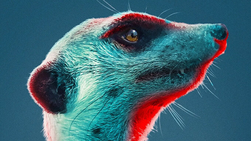

Past Projects
contributing live drums/percussion, drum programming, experimental percussion, & sound design
-

Meerkat Manor: Rise of the Dynasty
BBC America, AMC+ -

Spotlight on The Troubles: A Secret History
BBC One Northern Ireland -

Narco Wars
National Geographic -
Mavericks
PBS
Biography
Based in Los Angeles, but originally from Holland, Michigan, Composer Kevin DePree (33) began his career in the music industry as a drummer, playing professionally by his teenage years.
DePree is renowned for having an ear for creating cool percussion effects in his music. He achieves this by constantly pushing the boundaries of sound, experimenting with unusual items to bring originality to every score. It is his unique ability to turn these unconventional concepts into delicate percussion rhythms, combined with his trademark heartbeat of driving drums, that gives his music a truly timeless, yet contemporary dimension.
A talented multi-instrument performer in his own right, DePree spent years honing his talent as a musician playing bass, keyboards, synths and guitars as well as his beloved drums while perfecting his craft as a composer.
In recent years DePree has worked with Emmy winning composer Sheridan Tongue as a session drummer, bass player, programmer and sound engineer with credits on Tongue’s soundtracks for Meerkat Manor: Rise of the Dynasty (BBC America, AMC+), Spotlight on The Troubles (BBC UK), Narco Wars (National Geographic) and Mavericks (PBS Montana).
Critical Moment is the title of DePree’s first solo trailer album with Position Music. Once again, percussion-oriented rhythms heavily influence this collection and he performs many of the key instruments himself, having acquired an eclectic and impressive collection of custom drums and unique percussion instruments during his career.
His time spent working in production music was where he learned to develop his own musical style. He is a master at knowing just the right balance of technology to use in every track, whilst carving out space for human performance and collaborating with other artists to elevate his music to the next level with stunning effect.

Latest Music


Critical Moment
Kevin DePree brings a brand new collection of trailer music tracks to the table with his newest album, Critical Moment. This album features a wide selection of epic Neo-classical instrumental songs that serve as the perfect soundtrack to life's most intense moments. The Title track features fast-paced violins and epic high-production beat drops which build suspense and help develop the perfect cinematic soundtrack to pair with any trailer. We will be promoting hard and pushing for sync opps.
Label: Position Music
Credits:
- Composer: Kevin DePree
- Live Violin, Viola, Improvisations: Lauren Elizebeth Baba
- Live Drums & Percussion: Kevin DePree
- Mixing: Satoshi Noguchi
- Mastering: Becker Mastering
My Sound
DePree is renowned for having an ear for creating cool percussive effects in his music. He achieves this by constantly pushing the boundaries of sound, experimenting with unusual items to bring originality to every score. It is his unique ability to turn these unconventional concepts into delicate percussion rhythms, combined with his trademark heartbeat of driving drums, that gives his music a truly timeless, yet contemporary dimension. Many of these unique sounds are recorded and prepared for audio samplers where DePree can recall his custom sounds at any time.
With every project DePree is involved with, he builds custom sounds from scratch and now has an entirely custom percussion ensemble, found sounds, and sound FX collection to build from anytime he starts a new project or is hired for a production.


Services
Custom Music
DePree specializes in percussive driven, documentary, drama, and trailer styles of music.
Inquiries may be sent to email@kevindepree.com
Latest custom music for Amazon:
Live drums percussion & drum programming for your productions
- Live Drums/Percussion
- Processed Live Drums/Percussion
- Drum Programming (Including my own custom sample instruments)
- Sound Design
- Processed Loops (Live and sound designed)
- Live Parts (Noise reduced if needed) + mixed
- Multi-track delivery or stemmed down to roughly 10-20 tracks, unique FX tracks will be separate stems
Credits
contributing live drums/percussion, drum programming, experimental percussion, & sound design
- Meerkat Manor: Rise of the Dynasty // BBC America, AMC+
- Spotlight on The Troubles: A Secret History // BBC One Northern Ireland
- Narco Wars // National Geographic
- Mavericks // PBS
Testimonials
"Kevin has been playing drums/percussion and drum programming on my television & film soundtracks and albums for about 8 years. He has an incredible ear and a passion for music and always brings an exciting and original approach to both the recording side and the musical interpretation. He works quickly and provides wonderful recorded and produced stems in whatever format I require."
Emmy winning BAFTA nominated film and television composer